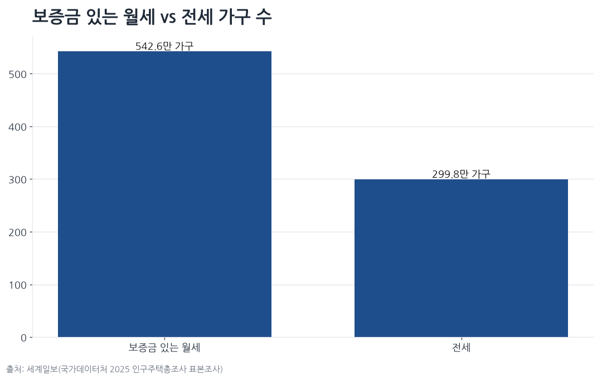

2026-11-25-1139-naver 발행 키트 · 이 페이지는 검색에 노출되지 않습니다.
제목
카테고리
시사태그
본문 (그림·표 포함)
휴대폰 블로그 앱에서는 그림이 같이 붙지 않을 수 있어요. 그때는 [글자만 복사] 후 아래 이미지를 저장해 [그래프1]·[표1] 자리에 첨부하세요.
학교와 학원 오가는 차비, 한 달이면 꽤 되죠. 중고등학생 자녀를 둔 집이라면 교통카드 충전을 자주 하게 되는데요. 다음 달부터는 이 차비를 일부 돌려받을 수 있게 돼요.
▶ 12월 1일부터 청소년도 쓸 수 있어요
대중교통비를 환급해 주는 모두의카드를 만 13세부터 18세까지 청소년도 쓸 수 있게 문이 열려요. 시작일은 12월 1일이에요.
수도권 일반형을 기준으로 보면 환급 방식이 두 가지예요. 쓴 돈의 20%를 돌려받는 정률형이 있고, 6만 2천 원을 넘게 쓴 금액만큼 돌려받는 정액형이 있어요.
청소년 모두의카드 환급 방식 (수도권 일반형)
| 구분 | 환급 방식 | 시작일 |
|---|---|---|
| 정률형 | 대중교통비의 20% 환급 | 12월 1일 |
| 정액형 | 6만 2천 원 초과분 환급 | 12월 1일 |
| 대상 | 만 13~18세 청소년 | 12월 1일 |
출처: 세계일보
▶ 어떤 방식이 내게 맞을까요
정률형은 쓴 만큼 비율로 돌려받으니 이용이 들쭉날쭉한 학생에게 단순해요. 정액형은 한 달 기준선을 넘겨야 환급이 시작되거든요. 통학 거리가 멀어 교통비가 많이 나오는 집에 어울려요.
우리 아이가 한 달에 대중교통비로 얼마나 쓰는지 먼저 확인해 보세요. 교통카드 내역을 보면 금방 나와요. 그 금액을 기준선과 견줘 보면 어느 쪽이 유리한지 감이 와요.
▶ 카드는 어디서 만들죠
만 13~18세용 카드는 농협, 신한, 우리, 코레일, 토스, 티머니, 하나, IBK기업, KB국민 등에서 발급해요. 카카오뱅크와 케이뱅크는 18세부터 가능해요.
카드를 받은 뒤에 끝이 아니에요. 앱이나 누리집에서 회원가입을 하고 카드를 등록해야 쓸 수 있어요. 이 등록 과정을 빼먹기 쉬우니 발급 날 바로 해 두세요.
내년 2월에는 청소년, 청년, 국내 거주 외국인을 위한 특화 카드도 더해질 예정이에요. 지금 급하지 않다면 선택지를 기다려 봐도 좋겠어요.
▶ 같은 날 나온 주거비 숫자도 눈여겨보세요
생활비 이야기가 나온 김에, 어제 국가데이터처가 내놓은 2025 인구주택총조사 표본조사도 한번 볼까요. 보증금을 낀 월세 가구가 542만 6천 가구로, 전세 299만 8천 가구보다 훨씬 많았어요.

서울은 더 두드러져요. 전체 가구의 33.7%가 월세로 살고 있어요. 세 집 중 한 집꼴이라는 뜻이에요.
보증금 있는 월세 가구의 30.8%는 거주 기간이 1년 미만이었어요. 전세는 21.1%, 자가는 8.1%였고요. 월세는 이사가 잦은 편이라는 걸 보여 주는 숫자예요.
매달 나가는 월세에 교통비까지 합치면 고정지출 부담이 만만치 않죠. 그래서 환급 제도 같은 작은 혜택을 챙기는 게 더 의미 있어요.
▶ 한 줄 정리
12월 1일부터 청소년도 교통비 환급을 받을 수 있으니, 카드 발급과 등록을 미리 챙겨 두세요.
여러분 집은 어떤 방식이 맞을 것 같으세요? 댓글로 알려 주세요.
출처 (본문 맨 아래에 붙여넣기 권장)
- 세계일보, 청소년도 ‘모두의카드’ 이용 가능… 교통비 20% 환급, https://www.segye.com/newsView/20261125507329 - 세계일보, “전세 살이보다 월세 살이가 훨씬 많다”··· 서울은 3집 중 1집이 월세, https://www.segye.com/newsView/20261125507611